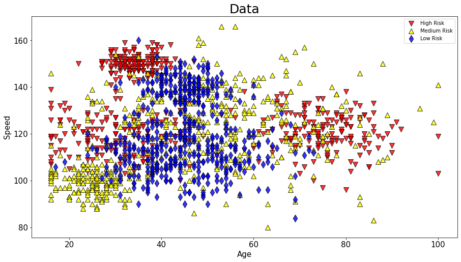

### Konkrete Todos
* Classification Dashboard mit anderem Datensatz zum zucken bringen
* Script für Requests klauen
* Setup aus Evidently Beispiel klauen
* Code im Server
* Grafana Dashboards
* Aus 2022-oop-ml.html und 2021-wjax-mlops.html Notebooks und Struktur übernehmen
* Datensatz erzeugen, der Außerhalb des Trainingsbereichs testet
* Untetschiedliche Arten von Produktion
* TF Serve
* Dedicated Server
* JS
* C++
* Java
## Story
### Phase 0
- Grundlagen und Installation
### Phase I
1. Ein gutes Modell mit TensorFlow oder sklearn entwickeln
1. Überblick Metriken: was passt gut? Wie benchmarked man
1. Generalization
1. Logik bauen die bestimmt, ob man dem Ergebnis traut, also ob man es nimmt oder einen Fallback
- bauen:
- check
- Fallback in Regeln
1. 1b Notebook und auch Alternative mit lattice zeigen
### Phase II
- Dinge in Module auslagern und auch im Notebook nutzen
- Autoreload im Notebook
- prediction
- präprocessing
- SKlearn pipeline
- Normalize
- post processing
- Denormalize
- Plausibility
- Erste Version des Servers haben
- Gerürst von app.py vorgeben mit Tracking Code etc.
### Phase III
- Version mit Evidently zum laufen bringen
- Requests aus Test Satz schicken
- Dashboard: alles gut
- Requests aus Shift Satz schicken
- Dashboard: Shift
- Alert
- anlegen auf Panel
- Liste der Alerts in Dashboard hinzufügen
- Dinge ausprobieren: https://play.grafana.org/
### The world is messy
Statisticians that believe that doing the statistics is the hard part reveal they have no sense how messy real world data collection is.
Hardest part is having a dataset that reflects reality. Time delays, simple dismissals, incentives, clerical errors, term ambiguity, on and on
(https://twitter.com/normonics/status/1511021293969235975?t=spHs38A9j38gdGASJMt1AA&s=03)
### Was ist MLOps?
* MLOps ist abgeleitet von DevOps
* Durch MLOps kommt ML in Produktion und wird in Betrieb gehalten
* Dazu kommen eine Reihe von Werkzeugen und Praktiken zum Einsatz
* Überschneidung aus
* Softwareentwicklung
* Operations
* Data Science
Klassifizierung basierend auf bekannten Daten

### Phase 1: Exploration
* in der ersten Phase eines Machine Learning Projekts wird die Anwendungsidee validiert und ein
funktionsfähiges Modell entwickelt.
* dabei ist ein schnelles iterieren und ausprobieren von Ideen zentral
* das Ziel ist *nicht* ein sinnvolles Stück Software
* Scripting passt hier besser als Programmieren als Ausdruck für die Tätigkeit
* das Ziel ist eine schnelle Entwicklung
* Phase 1 endet entweder mit
* einem funktionsfähigen Modell mit dem man in Phase II übergeht oder
* dem Verwerfen des Ansatzes
### Phase 2: Professionalisierung
* in der zweiten Phase wird die skizzierte Lösung in ein langlebiges Projekt umgewandelt
* alle Regeln einer guten Software-Entwicklung gelten von nun an
* Stabilität und Funktionalität wird gewährleistet
* Die Rahmenbedingungen der Produktionsumgebung müssen erfüllt werden
* Art des Deployments, Sprache, Latenz, Speicher, Bandbreite, etc.
* Phase II endet entweder mit
* reifem Code und Modell mit dem man in Phase III übergeht oder
* dem iterieren zurück in Phase I mit neu gewonnenen Erkenntnissen oder falls Rahmenbedingungen nicht erfüllt werden
### Phase 3: Produktion / Betrieb
* in der dritten Phase wird die Lösung in Betrieb genommen
* alle Regeln des produktiven Einsatzes von Software gelten auch hier
* Monitoring hat zusätzliche Herausforderungen
* Natur und Verteilung der Anfragen und auch Vorhersagen muss permanent überwacht werden
* Phase III endet entweder mit
* der Abschaltung
* entweder bald weil nutzlos oder
* später weil durch neues System ersetzt
* dem iterieren zurück in Phase II mit neu gewonnenen Erkenntnissen
* dem iterieren zurück in Phase I mit neu gewonnenen Erkenntnissen oder einem Neuansatz (häufig ebenfalls ein Zeichen für einen Fehlschlag)
### Technische Umsetzung des Betriebs in Produktion
* haben wir bereits vorhin gesehen
* Ein TensorFlow Graph lässt sich in unterschiedlichsten Szenarien einzusetzen
* Als Server
* local
* GCP
* Von C++
* Von JavaScript
* Von Java
### Der ganze Prozess ist auch als MLOps bekannt
_MLOps is a set of practices used to deploy and maintain machine learning models in production._
In layman terms, MLOps covers everything that comes after model building. After a model is trained and evaluated, it is
ready for end-use. It can then make predictions on new user data entering the system.
https://towardsdatascience.com/the-mlops-engineer-role-a-gentle-introduction-8d94cdc73904
# Von hier an nur Material
_MLOps today is in a very messy state with regards to tooling, practices, and standards. However, this is to be expected
given that we are still in the early phases of broader enterprise machine learning adoption. As this transformation
continues over the coming years, expect the dust to settle while ML-driven value becomes more widespread._
https://www.mihaileric.com/posts/mlops-is-a-mess/
https://developers.google.com/machine-learning/guides/rules-of-ml
Hidden Technical Debt in Machine Learning Systems: https://proceedings.neurips.cc/paper/2015/file/86df7dcfd896fcaf2674f757a2463eba-Paper.pdf
### Hauptarbeit, Metric Server mit Grafana etc. bauen
* Können wir damit Alerts triggern?
* https://evidentlyai.com/
* conda install dazu: https://docs.conda.io/projects/conda/en/latest/user-guide/tasks/manage-environments.html#creating-an-environment-from-an-environment-yml-file
* https://github.com/ecosia/pycon22-prometheus-workshop
* Docker nutzen optional
* Unsere APP served einfach das Modell, aber wir kriegen auch Metrics über Anfragen und Antworten
* einbauen, dass wir unsere Metriken wie Drift und so monitoren können
* Alert einbauen bei irgendwas
### Grundregel
* Alle haben Probleme in Produktion
* Es gibt kein fehlerfreies System
* jedenfalls nicht für lange
* Ziel ist es, Fehler schnell
* zu entdecken,
* zu analysieren
* und entsprechende ihrer schwere zu adressieren
### Die vier goldenen Regeln des traditionellen Monitorings
*
https://sre.google/sre-book/monitoring-distributed-systems/
## Welche Metriken kann man in ML Systemen überwachen?
Entscheidend ist die Performance des Systems
* Technische Metriken
* ohnehin verfügbar, weil für das Training erforderlich
* accuracy, precision/recall
* Business Metriken
* z.B.
* Umsatz / Gewinn
* Umfang Schadensmeldungen
* allgemeiner Käufe, Views, Clicks, etc.
* oft sinnvoller, aber schwerer zu messen oder schwerer zu quantifizieren
## Das reicht meist nicht
* Ground Truth liegt erst sehr spät vor
* Ob jemand ein guter Kunde ist wissen wir oft erst nach Jahren
* Manchmal liegt die Ground Truth überhaupt nicht vor
* Filter Bubble: es werden nur bestimmte Daten gesammelt
* wir sammeln nur Daten von Leuten, die auch unsere Kunden werden
* Unterschiedliche Teilbereiche können eine unterschiedliche Performanz haben
* Während ein Bereich besser wird, kann ein anderer, evtl. kleinerer Bereich deutlich schlechter werden, bei gleichbleibenden Performance
* Performance kann stark über die Zeit variieren
* anhängig von der Art der Anfragen
* manchmal mit Regelmäßigkeiten innerhalb eines Tages
* Trend in Abweichungen manchmal schwer zu bestimmen
## Was kann man machen: Frühes Monitoring
* Qualität der Daten
* wie verändern sich fehlende oder falsche Felder
* Plausibilität
* Daten Drift
* Verteilung der Eingabedaten
* Prediction Drift
* Was gibt das Modell aus?
## Datenqualität
* Felder
* fehlen
* ungültig
* falsch / unplausibel / Wertebereich verlassen
* Features
* konstante (die (meisten) Eingaben haben (fast) denselben Wert)
* leere
* fast leer
* Korrelationen zwischen Features
## Metriken für Drift
* Wie viele Predictions sind gültig bzw. werden als gut genug angesehen?
* Art der Verteilung (z.B. Normal)
* Parameter einer angenommenen Normalverteilung
* Mean
* Std Dev
* Percentile
* min-max
* Statistische Tests für Konfidenzintervalle
* KL Divergence
* Kolmogorow-Smirnow-Test
## Data Drift
* Verändert sich die Art der Eingabedaten?
* Oft ausdrückt durch die Verteilung der einzelnen Features
* Muss nicht notwendig schlimm sein
* Wenn entscheidende Features betroffen sind, kann es ein Problem sein
* Alarm anhand von
* Wichtigkeit der driftenden Features
* Anzahl der driftenden Features
* Ausmaß des Drifts
* Dafür wichtig
* Vernünftige Tests anhand der Metriken
* Vernünftige Konfidenzintervalle
## Vernünftige Tests: Nicht-Parametrische Tests
## Vernünftige Tests: Parametrische Tests
* Parametrische Tests sind besser als Nicht-Parametrische für Drift-Detection
* Müssen für jedes Feature einzeln aufgesetzt werden
* Sinnvoll wenn man nicht zu viele Features hat und man eine hohe Sicherheit braucht
* Beispiele für Tests
* Z-Test
* Es wird eine Normalverteilung angenommen
* https://www.statisticshowto.com/probability-and-statistics/hypothesis-testing/z-test/
* Z-Test, T-Test des Mittelwerts (m = m0)
* Z-Test für eine Proportion https://statologie.de/z-test-eine-proportion/ (p = p0)
## Maßnahmen bei Drift
* Neue Daten aufnehmen (und labeln)
* Neue Version des Modells trainieren
* Schnelle Maßnahme
* Pre-/Post-Processing des Modells neu kalibrieren
* Schwellwerte für Anwendung anpassen
* Bestimmte Bereiche ausklammern
* Modell Architektur ändern (oder fixen) und neu trainieren
* Sehr schnelle Maßnahme: Fallback
* Manuell
* Heuristik / Baseline
### Grafana
https://play.grafana.org/
### Prometheus
* https://prometheus.io/
* https://prometheus.io/docs/prometheus/latest/getting_started/
* https://prometheus.io/download/